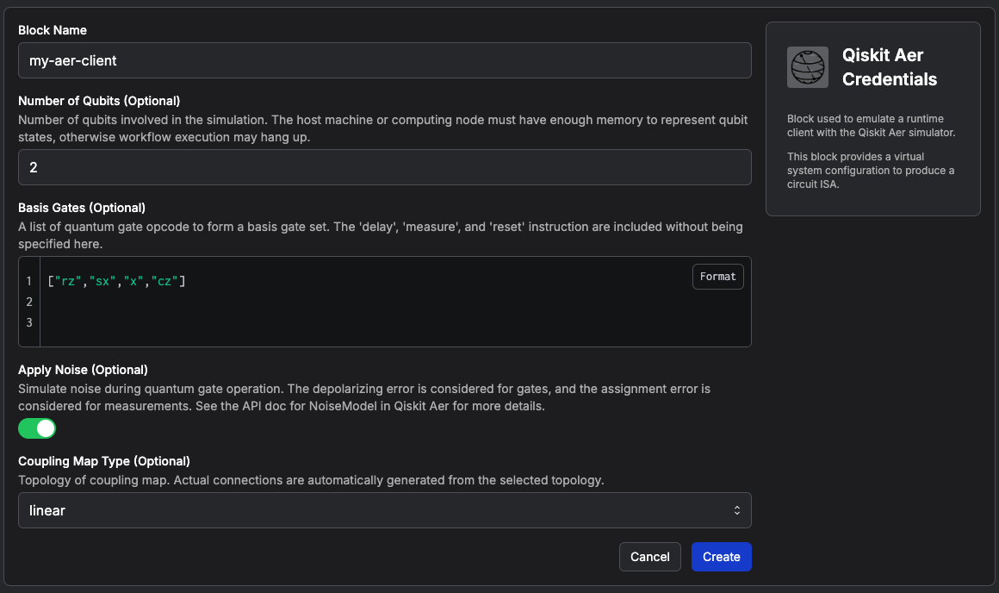
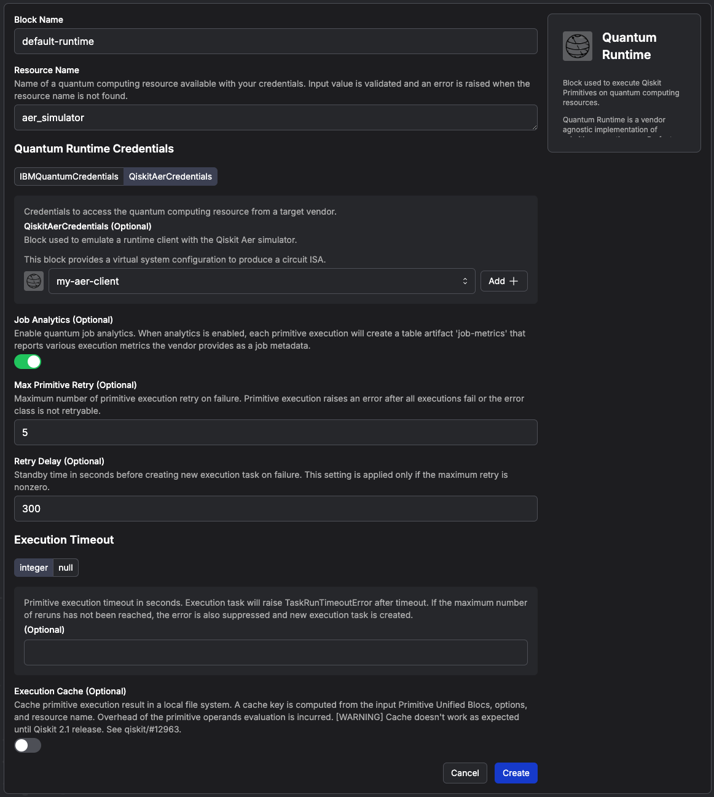
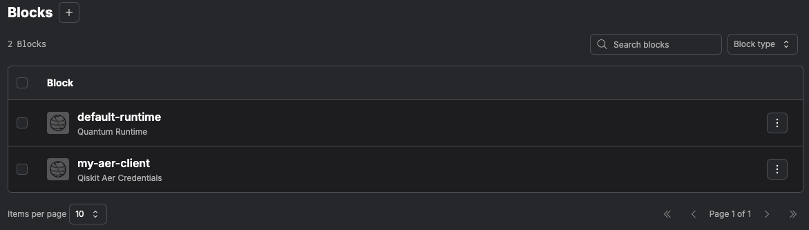
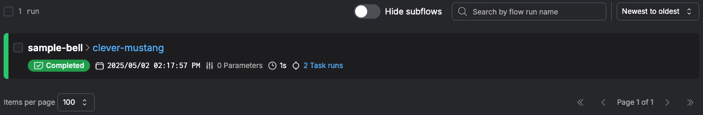
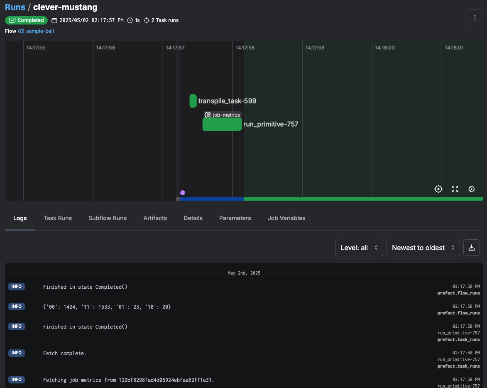
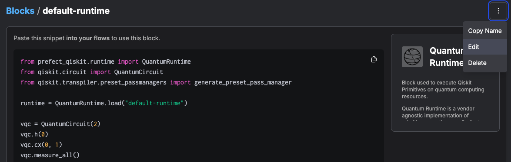

01. Getting Started Introduction to Prefect Qiskit
This tutorial covers the end-to-end procedures for running a quantum experiment as a workflow. The workflow runs locally on your laptop.
Setup
We recommend creating a dedicated virtual environment to install the plugin. This helps isolate dependencies and avoid conflicts with other projects. Since both Prefect and Qiskit are dependencies, you don't need to install them separately.
Note
This software requires Python 3.10+
python3.10 -m venv quantum_workflow
source quantum_workflow/bin/activate
pip install prefect-qiskit
uv venv quantum_workflow -p 3.10
source quantum_workflow/bin/activate
uv pip install prefect-qiskit
Create a new Prefect profile for this tutorial. We use localhost for this example, but you can also use Prefect Cloud for more advanced features and scalability.
prefect profile create qiskit
prefect profile use qiskit
prefect config set PREFECT_API_URL='http://127.0.0.1:4200/api'
Start the Prefect server. You may need to wait a little while for the server to come up.
prefect server start --host 127.0.0.1 --background
Register Prefect Blocks for Qiskit integrations.
This will register the QuantumRuntime block and credential blocks for specific hardware vendors.
prefect block register -m prefect_qiskit
prefect block register -m prefect_qiskit.vendors
Now you can find the Prefect console at http://127.0.0.1:4200/dashboard.
Write a workflow script
Create a Python file.
touch my-workflow.py
Add the following code block to the script file.
from prefect import flow, task
from prefect.variables import Variable
from prefect.logging import get_run_logger
from prefect_qiskit import QuantumRuntime
from qiskit.circuit import QuantumCircuit
from qiskit.transpiler import generate_preset_pass_manager
@task
def transpile_task(circuit, target):
pm = generate_preset_pass_manager(
optimization_level=2,
target=target,
)
return pm.run(circuit)
@flow
def sample_bell():
logger = get_run_logger()
# 1. Load QuantumRuntime from Prefect Server
runtime = QuantumRuntime.load("default-runtime")
options = Variable.get("sampler_options")
# 2. Create ISA quantum circuit
bell = QuantumCircuit(2)
bell.h(0)
bell.cx(0, 1)
bell.measure_all()
isa_circ = transpile_task(
circuit=bell,
target=runtime.get_target(),
)
# 3. Execute workflow sampler
result = runtime.sampler([isa_circ], options=options)
logger.info(result[0].data.meas.get_counts())
# Run the flow
if __name__ == "__main__":
sample_bell()
Tip
In above example code, the program loads runtime and options data from the Prefect server.
This is a common practice in writing good software, where the configuration data is stored separately from the program,
instead of hard-coding the configuration as part of the code.
We will define configuration data later on the Prefect console.
Use Qiskit Aer
Qiskit Aer is a popular circuit simulator for Qiskit. We start from testing the workflow with the simulator because real quantum processors may have a limited execution time allocation.
Before running your script, you need to provide configuration data. Open the Prefect console and navigate to the Blocks tab. Then, click the "Add Block" button and enter "Qiskit Aer Credentials" in the search window. Click the "Create" button on the card and fill in the necessary information as below.

Setup the Aer credential with the following information.
Block Name: "my-aer-client"
Number of Qubits: 2
Basis Gates: ["rz", "sx", "x", "cz"]
Apply Noise: true
Coupling Map Type: "linear"
Go back to the Blocks page, and create another block for Quantum Runtime.
You can choose the my-aer-client from a drop-down menu.

Set up the runtime with the following information.
Note that the block name must be default-runtime to align with the workflow script.
For Aer simulator, only aer_simulator is accepted for the resource name.
Block Name: "default-runtime"
Resource Name: "aer_simulator"
Quantum Runtime Credentials: my-aer-client
Job Analytics: true
Max Primitive Retry: 5
Retry Delay: 300
Execution Timeout: null
Execution Cache: false
When the Blocks are created successfully, the console may look like this.

Next, create Prefect Variables. Navigate to the Variables tab and click the "Add Variable" button. The Blocks are typed configuration documents with schema, and the Variables are free-form JSON input.
Create a new Variable with the following information.
Name: "sampler_options"
Value: {"default_shots": 3000}
Note
Because primitive options are vendor-specific values, the common interface of runtime is designed to take a free-form dictionary. Schema validation is applied after the data is passed to the vendor-specific implementation of the runtime. Please refer to the runtime specification of each vendor for the data schema of primitive options.
Now you are ready to run the workflow with the Aer backend. Go back to the terminal and enter the command.
python my-workflow.py
Navigate to the Run tab of the console,
and you will find a new entry for the sample-bell workflow with auto-generated unique name.

Click the task name to open the status of the workflow execution. You can check logs and artifacts. If your workflow has input parameters, these are also recorded in the Parameters tab.

With the above runtime settings, a job-metrics artifact is automatically created, and you can find it in the Artifacts tab.
This artifact shows statistics of quantum job execution.
Use IBM Quantum
We will run the same workflow on one of the IBM Quantum devices. Visit to the IBM Quantum Platform to generate an API key and copy the cloud resolution name (CRN) of your instance. Check out the IBM Documentation for details. A list of resource names are also available on your quantum instance.
As with the Qiskit Aer Credentials, find "IBM Quantum Credentials" from the Block catalogue. Create a new Block with the API key and CRN. The URLs for the authentication endpoint and runtime endpoint can be left empty unless you need custom endpoints.
Block Name: "my-ibm-client"
API Key: <your api key>
Cloud Resolution Name: <your crn>
Authentication Endpoint URL: null
Runtime Endpoint URL: null
On the default-runtime Block window, click "Edit" to replace the Aer credentials with the IBM credentials.

Choose the my-ibm-client from the drop-down menu.
Also, replace the Resource Name value with one of the available resources in your cloud instance (e.g. ibm_torino).
Save it after the credential and resource name are updated.
Then, edit the sampler_options Variable with the new value. The following format conforms to the IBM Quantum Runtime API data schema.
Name: "sampler_options"
Value: {"params": {"shots": 3000}}
Go back to terminal and enter the command.
python my-workflow.py
Now you are running the same experiment on real quantum hardware. In this way, you can run experiments on any hardware or with any sampler options without editing the source code.
After all experiments are completed, terminate the Prefect server.
prefect server stop
See Also
In this tutorial, you run the workflow as a local Python script. If the experiment takes longer to run or needs to be run on a regular basis, it becomes hard to manage such local Python processes.
In such a situation, you can deploy the workflow to a self-hosted remote workflow server or Prefect Cloud. Visit Prefect Deploy Guide to find instructions.
Experiment results can be also saved as Artifacts.